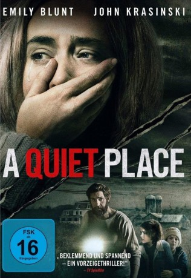

#9242 A Quiet Place
 gesehen am 20.07.2018
gesehen am 20.07.2018
 
 IMDB-Wertung: 7.6 / 10
IMDB-Wertung: 7.6 / 10  Metascore: 82
Metascore: 82 
Die Welt ist von rätselhaften, scheinbar unverwundbaren Kreaturen eingenommen worden, die durch jedes noch so kleine Geräusch angelockt werden und sich auf die Jagd begeben… Lediglich einer einzigen Familie gelang es bisher zu überleben. Der Preis hierfür ist jedoch hoch: Ihr gesamter Alltag ist darauf ausgerichtet, sich vollkommen lautlos zu verhalten, denn das kleinste Geräusch könnte ihr Ende bedeuten...
Jahr: 2018
Dauer: 90 Minuten
FSK: 16
Land: USA Studio: Paramount PicturesTonspuren: DD5.1 - ,
Untertitel: Deutsch, Englisch,
Auflösung: 1080p (1920x800) Größe: 7331 MB
Genre: Thriller, Horror, Drama, Sci-Fi
Regisseur: John Krasinski
Drehbuch: Bryan Woods
Soundtrack: Marco Beltrami
Darsteller:
Datei: X:\2018(N-Z)\Quiet Place, A (2018, FSK16, 1920x800).mkv seit 20.07.2018
Festplatte: HD 2018(G-Z)-2019(A-Z)
 Es gibt insgesamt 172 Filme in der Gruppe '2018(N-Z)'
Es gibt insgesamt 172 Filme in der Gruppe '2018(N-Z)'